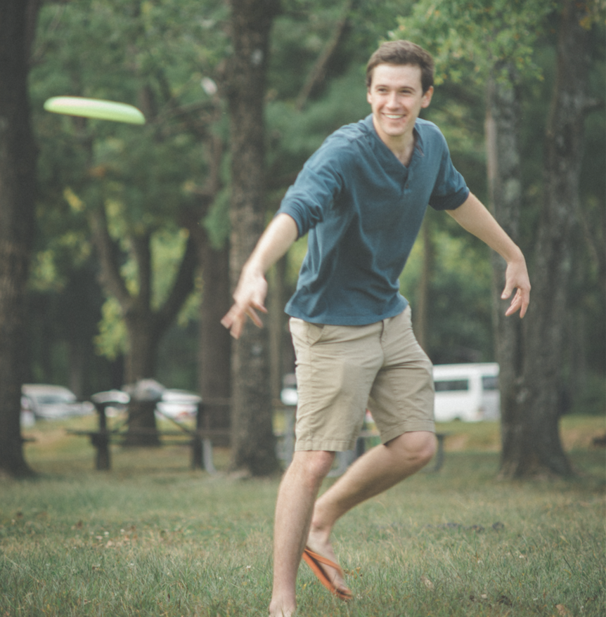

- Professor
-
Chao Zhou, PhD
P. C. Rossin Assistant Professor
Department of Electrical and Computer Engineering
Bioengineering Program
Lehigh University
Google Scholar: http://scholar.google.com/citations?user=p_QR9RUAAAAJ
Education:
Ph.D. Physics, University of Pennsylvania 2007
M.S. Physics, University of Pennsylvania 2003
B.S. Physics, Peking University 2001
Short Biography:
Dr. Chao Zhou graduated from Peking University in China (B.S., 2001), obtained his Ph.D. degree from the University of Pennsylvania (2007), and received post-doctoral training from Massachusetts Institute of Technology. He joined the faculty at Lehigh University in 2012 as an assistant professor in electrical engineering and bioengineering. Dr. Zhou has extensive experience in biophotonics and has contributed to the development and validation of novel imaging modalities for various applications ranging from measuring the brain function to monitoring cancer treatments. Dr. Zhou has published over 50 peer-reviewed journal articles and book chapters, and is a member of the International Society for Optical Engineering (SPIE), Optical Society of America (OSA), Institute of Electrical and Electronics Engineers (IEEE), American Heart Association (AHA), and the International Society for Cerebral Blood Flow and Metabolism (ISCBFM).
- Postdoctoral Researcher
-
Jitendra Solanki
Ph.D
E-mail: jis915@lehigh.edu
Education:
PhD in Physics, Devi Ahilya University, Indore, India, 2008-2013
M.Sc. and M. Phil. in Physics, Devi Ahilya University, Indore, India, 2005-2008.
B.Sc. in (Physics, Chemistry and Mathematics), Devi Ahilya University, Indore, India, 2002-2005
Short Biography:
I did my doctoral study on Noninvasive, noncontact monitoring of blood glucose in human subjects using optical coherence tomography from Devi Ahilya University, Indore, India during 2008-2013. In 2014, I joined as a postdoctoral research associate at the department of biomedical engineering, Texas A & M University, College Station, Texas and there I worked on instrumentation for measurement of implanted sensors, particularly luminescence lifetime analysis of O2 and glucose sensors. At Lehigh University, I am working with Prof. Chao Zhou and on projects developing ultrahigh speed optical coherence tomography technologies and their applications.
- Graduate Students
-
Yongyang Huang
Ph.D candidate
E-mail: yoh213@lehigh.du
Education
Ph.D student in Electrical & Computer Engineering, Lehigh University, 09/2013 - present
B.S. in Physics, Peking University, 09/2009 - 07/2013
Short Biography:
Yongyang Huang received his B.S. degree in Physics at Peking University in July 2013. Since September 2013, he has been a Ph.D student in Department of Electrical & Computer Engineering (ECE) in Lehigh University.His research area is focused on optical coherence tomography (OCT) and its applications in biomedical imaging.
-
Jing Men
Ph.D student
E-mail: jim614@lehigh.edu
Education:
PhD student in Biomedical Engineering, Lehigh University, 9/2014 - present
Master student in Optics, Peking University, 9/2011- 7/2014
Short Biography:
Jing Men received her Bachelor's degree in Northeast Normal University in July 2010. From September 2011 to July 2014, she is a master student in Optics in Peking University. Since September 2014, she becomes a PhD student of Lehigh University in Biomedical Engineering.Her research area is mainly about Optical Coherence Tomography (OCT) and its applications on fruit flies.
-
Penghe Wu
Ph.D candidate
E-mail: pew215@lehigh.edu
Education
Ph.D student in Bioengineering, Lehigh University, 08/2015 - present
B.S. in Engineering Physics, Tsinghua University, 08/2011 - 07/2015
Short Biography:
Research area is mainly about Optical Coherence Tomography (OCT) and its applications on optogenetics.
-
Lian Duan
Ph.D candidate
E-mail: lid315@lehigh.edu
Education
Ph.D student in Electrical Engineering, Lehigh University, 09/2015 - present
B.S in Physics, Peking University, 09/2011 - 07/2015
Short Biography:
Lian Duan received his B.S. degree in Physics at Peking University in July 2015. He has been pursuing hes Ph.D degree in Department of Electrical & Computer Engineering (ECE) in Lehigh University since September 2015.His research area is mainly focused on Optical Coherence Tomography (OCT) and its applications.
- Master Student
-

Jason Jerwick
Masters Student
E-mail: jrj215@lehigh.edu
Education:
M.S Student in Electrical and Computer Engineering, Lehigh University, 01/2015-Present
B.S. in Bioengineering, Lehigh University, 08/2011- 01/2015
Short Biography:
Jason earned a B.S. in Bioengineering from Lehigh University in January 2015. He is currently working towards a M.S. in Electrical and Computer Engineering. His research area is focused on optical coherence tomography (OCT) and its applications in biomedical imaging.
- Visiting Student
-
Luisa Geopfert
Undergraduate Student
E-mail: lug315@lehigh.edu
Education:
B.S., Bachelor degree in biomedical Engineering, Applied Science University
Short Biography:
Luisa is a exchange student from Germany. She is working on the 3D tumor imaging of cancer cells with Yongyang.
-
Mingming Chen (Brian Chan)
Visitor Student
E-mail: mic515@lehigh.edu
Education:
M.S in Computer Science, Wuhan University, China, 09/2014 - present
B.S in Computer Science, Wuhan University, China, 09/2010 - 07/2014
Short Biography:
Brian is a visiting student from China. He is pursing Bachelor degree in Computer Science. His research interests includes machine learning algorithms and applications.
- Alumni
| Name | Time at Z-lab | Role at Lehigh | current Placement |
|---|---|---|---|
| Aneesh Alex | 11/2012-03/2015 | Post-doctoral Associate | Visiting Scientist (GlaxoSmithKline),Beckman Institute for Advanced Science and Technology |
| Xianxu Zeng | 11/2013-10/2014 | Visiting Scholar | Director, Pathology Department, the 3rd Affiliated Hospital of Zhengzhou University, China |
| Yutao Ma | 06/2012-09/2012 | Visiting Scholar | Associate professor, Software Engineering, Wuhan University, China |
| Qing Xu | 07/2014-09/2014 | Visiting Scholar | Shanghai, China |
| Charly Caredda | 06/2013-08-2013 | M.S., TELECOM Saint - Etienne | |
| Fengqiang Li | 06/2012-08/2012 | M.S., Electrical and Computer Engineering | |
| Andre Sukernik | 12/2013-05/2015 | B.S., Electrical and Computer Engineering | Graduate student at California Institute of Technology. |
| Jonah Kohen | 06/2013-08/2013 | B.S., Computer Engineering | Graduate student at Stanford University. |
| Katherine Vojir | 06/2012-09/2012 | B.S., Bioengineering | Biomaterials Research Engineer at DSM |
| Nicole Pirozzi | 09/2012-05/2014 | B.S., Bioengineering | Erasmus Mundus Master Program in Europe |
| Dana McAllister | 09/2012-05/2014 | High school student | Undergraduate student at Stevens Institute of Technology |